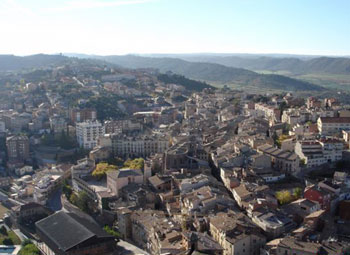

News from Cardona

From Poppy:
So, we are at the Parador de Cardona, a huge 9th-century castle on the top of a mountain overlooking the small town of Cardona. The Spanish government funds the paradors as a way of promoting tourism in Spain in areas that normally don’t attract tourists such as, well, Cardona. They get lots and lots of tourists going to Madrid, Barcelona, and the coastal towns, but not so many to other places. One consequence of this is that the towns around many of the paradors are not used to tourists, and very few people speak English. So we are having a difficult time understanding people and making ourselves understood.
The restaurants at the paradors serve beautifully presented indigenous food that is a little weird and not all that satisfying, at least not to me. So tonight, we wanted to go into Cardona to eat instead of eating in the parador. We got a girl at the desk to recommend a couple of bar-restaurants to us in Cardona, although she was reluctant to do so because, of course, they want everyone to stay put and eat in the restaurant here on the grounds. So we ventured forth and wound up in a clean, well-lighted little place where we had had coffee the day before—we didn’t recognize the name when the girl recommended it to us.
It’s a little place run by a guy and his wife, and as we walked in, there were three girls eating pizza and a guy next to us eating pizza and a salad. Mom got excited to see the salad because they are kind of rare around here, and the pizza was a welcome sight to me because of its relative familiarity. I dined last night on some rather funky grilled lamb loin chops, and Mom had some fish loin (that’s what the menu said, but I’m still wondering how a fish could have loins) with lots of bones in it. So, the guy who owns the place walks over and hands us menus in English, which was another welcome sight. However, the English translator did not fully succeed in rendering the menu choices into vernacular that was recognizable by two Pittsburgh-based Americans. There was a regular menu and a pizza menu, and the pizza menu was divided into a “Pizza” page and a “Slice” page. Mom pointed to the salad that the guy next to us was eating and attempted to indicate that that was what she wanted. A salad sounded great to me too, so I indicated that I wanted one too. The guy pointed to one of the items under the “Slice” menu, indicating what it was that the guy next to us was eating, and we enthusiastically nodded our heads.
Now things get interesting. I then pointed to the Pizza page and attempted to order a pizza margarita with ham for me and a plain pizza margarita for Mom. The guy seemed a little incredulous, and we all attempted to make ourselves understood to one another. He summarized what it was that he thought we were ordering, which we assumed to be two salads and two pizzas—the salads, we figured, were listed on the page with the “Slice” heading. So we nod in affirmation, and he goes away. Mom is hoping to get her salad soon, but after a bit of a long wait, he walks over with two identical things that look like pizzas, but the “dough” that they are on is more like large pieces of bread. And the fact that they are identical is a bit puzzling, since we thought we ordered two different kinds of pizza. He then looks at me and says, “pizza margarita ham,” or some such thing, and I nod enthusiastically in affirmation. However, upon further examination, we confirm that the two pizza things are identical, and there is no ham in evidence on either. Meanwhile, Mom waits for the delivery of the salad, which never happens.
Midway through the pizzas, with my appetite rapidly becoming satiated, I begin to be gripped by a certain fear. What if he thinks we want two more pizzas? Could two more pizzas be coming our way? Sure enough, he arrives shortly carrying a pizza margarita and a pizza margarita that is loaded with small pieces of ham. And no salad. Too late, we realized that the guy next to us was also eating a pizza-like thing. So, we had ordered two of those, which we now understood to be what the Spaniards mean by “Slice,” and two pizzas. When we were pointing at what the guy next to us was eating, the owner assumed we meant the Slice, not the salad. The salad, we later learned, wasn’t even on the menu. We learned this because Mom, wanting her salad, was not to be denied. She walked up to the counter and ultimately was able to make the guy understand what she wanted, which she soon got. I, however, now stuffed with pizza/Slice, was now staring at two additional pizza margaritas on the table, which I understood it to be my duty to eat. I finished most of the margarita and two slices of the ham/margarita before surrendering. Fully an hour later, I am still stuffed and may never need to eat again.
Add a comment